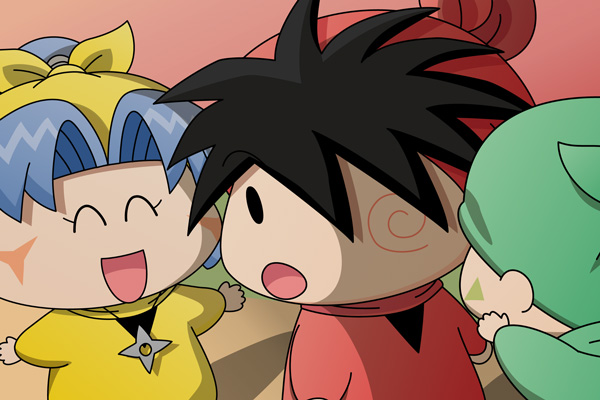

ヤマネ「ヤシチ兄様！これで試験は合格でございますね」
ヤシチ「試験？合格？いったい何の話をしているのだ？」
ハンゾー「忍術試験のことなのら～」
サスケ「兄貴をだますことができたら合格なんだぜ！」
ヤシチの頭の上には？マークが浮かんでいます。

ヤマネ「ヤシチ兄様が私たちに課した試験なのでございます。
そしてヤシチ兄様は今回の事件の犯人をミルモ殿だと
見事に間違えてくださいました！」
ヤシチ「間違い？ 何を言っておるのだ？
だいたい拙者はミルモにいきなり襲われたのだぞ」
ヤシチが反論すると、ハンゾーがヤシチの前に立ちました。
ハンゾー「ボクなのら～」
ヤシチ「へ？」
ハンゾー「ボクがミルモに変装していたのら～。
サスケとテレビを見ているふりをして、こっそり兄貴の
部屋へ向かったのら」
ヤシチ「何ぃ、本当にお前なのか？ハンゾー」
ハンゾー「ぐっすりおやすみハンマーで後ろからがつ～んなのら～」
ヤシチ「うぬぬ・・・。仮にそうだったとしても、拙者以外の誰かが見たら
変装だと気付いていたかもしれんぞ？」
ヤマネ「はい、途中アロマ殿に見つかってしまい、ハンゾー先輩の変装を
見破られる寸前まで行きましたが、そこはちゃんと手を
打ったのでございます」
弟子たちからの予想もしない言葉に背筋をぞくぞくさせながら、ヤシチは質問を続けます。
ヤシチ「拙者の話は置いといて、パピィの事件はどうなのだ？
ミルモが犯人じゃないとするといったい誰がニコニコンＣを混ぜた
というのだ？」
サスケ「違うぜ兄貴！
誰もニコニコンＣをコーヒーマシュマロに混ぜたりはしていないんだぜ」
ヤシチ「・・どういうことだかさっぱり分からんぞ。サスケ」
ヤマネ「ヤシチ兄様の事件の推理を分かりにくくするために、パピィ殿には
ニコニコンＣを飲んだ”フリ”をしていただいたのでございます。
前日の夜にお風呂の中でパピィ殿にお願いしたら、快く協力して
くださいまして・・」
ヤシチ「いくら仲がいいからとはいえ、そんなに簡単に引き受ける
ものなのか？」
ヤマネ「そうすればムルモ殿がきっと心配してくれるはずとお伝えしましたら、
すぐにお返事をいただいたのでございますわ」
ヤシチ「・・・」
他人の恋心まで利用する弟子たちに恐れを抱くヤシチ。
いやもしかしたら弟子たちは拙者を騙そうと適当なことを言っているのではないか？
どこか反論できる部分はあるはずだと思い、ヤシチはさらに質問を続けました。
ヤシチ「そうすると、アロマの事件もお前たちが・・・」
ヤマネ「いいえ。それは私たちではないでございます」
ヤシチ「？ じゃあ誰なのだ？」
ハンゾー「あれはパピィがやったのら」
サスケ「部屋で寝たふりをしていたパピィが犯人なんだぜ」
ヤマネ「お昼の後に私がこっそりパピィ殿の部屋へ行って、アロマ殿を寝かせる
ようにお願いしておいたのでございます。
パピィ殿がアロマ殿の部屋へ無事にたどり着けるかは心配でしたけれど、
そこさえうまくいけば、後はみんなが食堂に集まっている間に犯行を行う
だけですから。
もちろんパピィ殿からアロマ殿へちゃんと説明していただくように
お願いはしておりますので」
ヤシチ「うぬぬ・・・。
未だにお前たちがやったとは信じられんぞ・・。
・・・いや待てよ、行きの船で拙者がミルモからチョコクレープを奪って
いなかったら、そもそものミルモの動機が無くなったのではないのか？」
ヤマネ「ヤシチ兄様ならきっとチョコクレープを奪ってくださると信じておりました」
ヤシチ「・・・」（拙者の行動も読まれてるとは・・・恐ろしい！）
サスケ「ちなみにニセの招待状を送ったのももちろんオイラたちだぜ」
ヤマネ「最後はムルモ殿に見破られてしまいましたけど、ヤシチ兄様が
あの場に何とか間に合ってほっとしたのでございます」
ヤシチ（ムルモだと・・・拙者はムルモに負けたことになるのか？）
ヤマネ「ヤシチ兄様、試験は見事合格でございますね」
ヤシチ「不合格だ！」
サスケ「え～、どうしてだぜ？」
ハンゾー「ボクたちちゃんと兄貴を騙したのら～！」
ヤシチ「ばかも～～～んっ！
関係ない妖精を巻き込んでいいなんて一言も言ってないぞ～～！
やりすぎにもほどがあるぞ～～っ！」
ヤマネ「も、申し訳ございませんっ」
目の色変えて激しく怒るヤシチに、３人の弟子は体を寄せ合って怯えていました。
＊
その日の晩、ヤシチは一人でミルモの元（リルムの家）へ行きました。
ヤシチ「・・・というわけなのだ。
どうか弟子たちのことは許してやってくれないか？」
ミルモ「・・そういうことなら仕方ね～な」
ヤシチ「本当か！ すまぬ、ミルモ・・・」
ミルモ「でもチョコクレープの恨みは晴らせてもらうからな」
ヤシチ「へ？」
ミルモ「スペシャルゴールデンケツアターック！！」
ヤシチ「あ～～れ～～～っ」（きらーん）
吹っ飛ばされたヤシチは夜空に輝く星となりました。
おわり
祝完結！ 長らくのご愛読、本当にありがとうございました。何といういい加減な設定・・・そして途中だらだらとスローペースになったことも反省してます（その割には終盤は一気に行きすぎました^^;）。とにかく今は何とか最後まで続けることが出来てホッとしているところです。皆さんの推理は当たりましたでしょーか？
「お菓子への招待」の主役は一応はムルモ…のはずだったのですが、終盤はすっかり出番を失ってしまいました(^◇^;)。同じく後半まるまる出番の無かったパピィとともに、別のストーリーで二人を活躍させてあげたいなぁ。
今回はたくさんの文章やセリフを考えるのが大変でしたので、次回以降のストーリーは文章少なめになりそうです。新しい連載もまた考えていますので、その時までしばらくお待ちくださいね。
(2009/4/2)